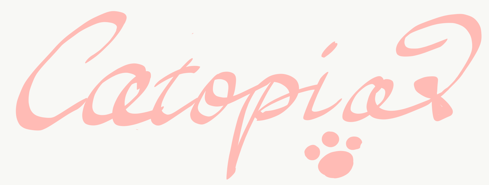

<nav class="navbar sticky-top navbar-expand-sm navbar-inverse navbar-light bg-light">
  <a class="navbar-brand" [routerLink]="['/']"></a>

  <button class="navbar-toggler" data-toggle="collapse" data-target="#navbarCollapse">
    <span class="navbar-toggler-icon"></span>
  </button>

  <div class="collapse navbar-collapse" id="navbarCollapse">
    <form class="form-inline my-2 my-lg-0 ml-auto" (ngSubmit)="onSearch()">
      <input [(ngModel)]="keyword" name="search" class="form-control mr-sm-2" type="search" placeholder="Search"
        aria-label="Search">
      <button class="btn btn-outline-success my-2 my-sm-0" type="submit">Search</button>
    </form>
    <ul *ngIf="!user; else logoutBlock" class="navbar-nav navbar-right">
      <li class="nav-item">
        <a class="nav-link" [routerLink]="['/login']"><i class="fas fa-sign-in-alt fa-2x top-nav-btn"></i></a>
      </li>
    </ul>
    <ng-template #logoutBlock>
      <ul class="navbar-nav navbar-right">
        <li class="nav-item">
          <a id="avatar-btn" [routerLink]="['user',user.id]" class="nav-link">
            
            <!-- {{user.userName}} -->
          </a>
        </li>
        <li class="nav-item">
          <a id="edit-profile-btn" [routerLink]="['/user/edit']" class="nav-link"><i
              class="fas fa-user-edit fa-2x top-nav-btn"></i></a>
        </li>
        <li class="nav-item">
          <a class="nav-link" [routerLink]="['/']" (click)="logout()"><i class="fas fa-sign-out-alt fa-2x top-nav-btn"
              id="logout"></i></a>
        </li>
      </ul>
    </ng-template>
  </div>
</nav>